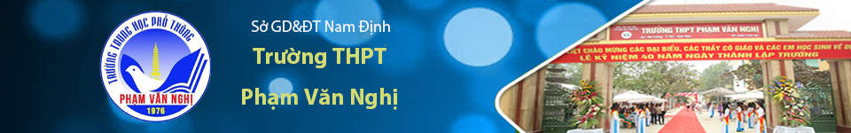

TIN TỨC
-
Tuyên chuyền về pháo nổ
Khó có một nghiên cứu đầy đủ cho biết pháo đã được sử dụng chính xác từ thời điểm nào, nhưng với sự truy nguyên nguồn gốc phát minh thuốc nổ đen từ Trung Hoa, cho thấy rất có thể pháo đã được sử dụng đầu tiên trên thế giới tại quốc gia này.
-
Lời cảm ơn
Ngày 17 tháng 11 năm 2012 trường THPT Phạm Văn Nghị đã long trọng tổ chức Lễ kỷ niệm 40 năm ngày thành lập trường (1972-2012).
-
.jpg)
Việc làm đầy ý nghĩa của một "người hùng" trong tháng thanh niên
Bé gái 2 tuổi bò qua lan can rồi rơi từ tầng 12A của tòa chung cư ở Hà Nội xuống. May mắn, cháu bé đã được người đàn ông đỡ
Thiếu tá Nguyễn Minh Thắng, Phó Trưởng Công an phường Thanh Xuân Trung, quận Thanh Xuân, Hà Nội xác nhận bé gái 2 tuổi rơi từ tầng cao của chung cư xuống.
-
Điều chỉnh nguyện vọng thi đại học 2020
Đây là phương thức đổi mới dự kiến về tổ chức kỳ thi THPT quốc gia được Bộ GD-ĐT báo cáo tại cuộc họp của Hội đồng quốc gia Giáo dục và phát triển nhân lực, ngày 25-9.
-
Tổ chức nhiều hoạt động sôi nổi góp phần nâng cao chất lượng giáo dục.
Ngày 18 tháng 11 năm 2020 chi bộ trường THPT Phạm Văn nghị vinh dự có đồng chí Nguyễn Văn Cuông nguyên bí thư chi bộ, hiệu trưởng nhà trường được nhận huy hiệu 30 năm tuổi Đảng.